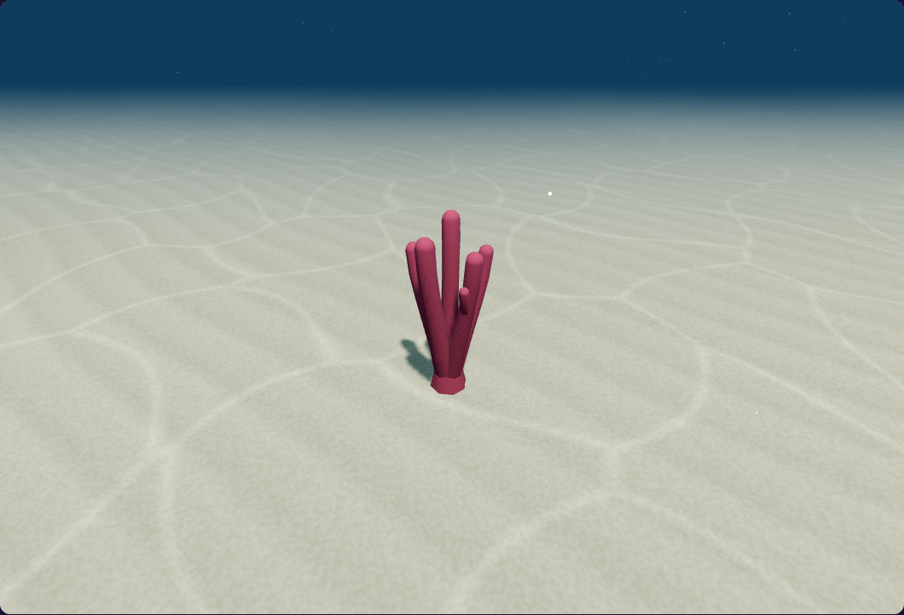
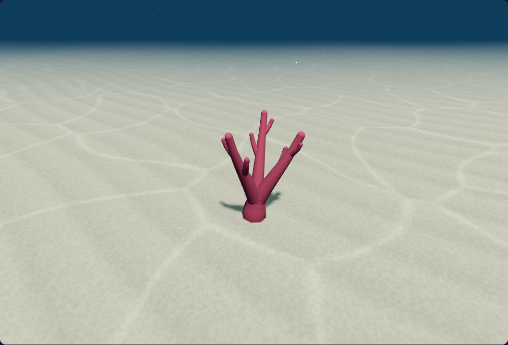
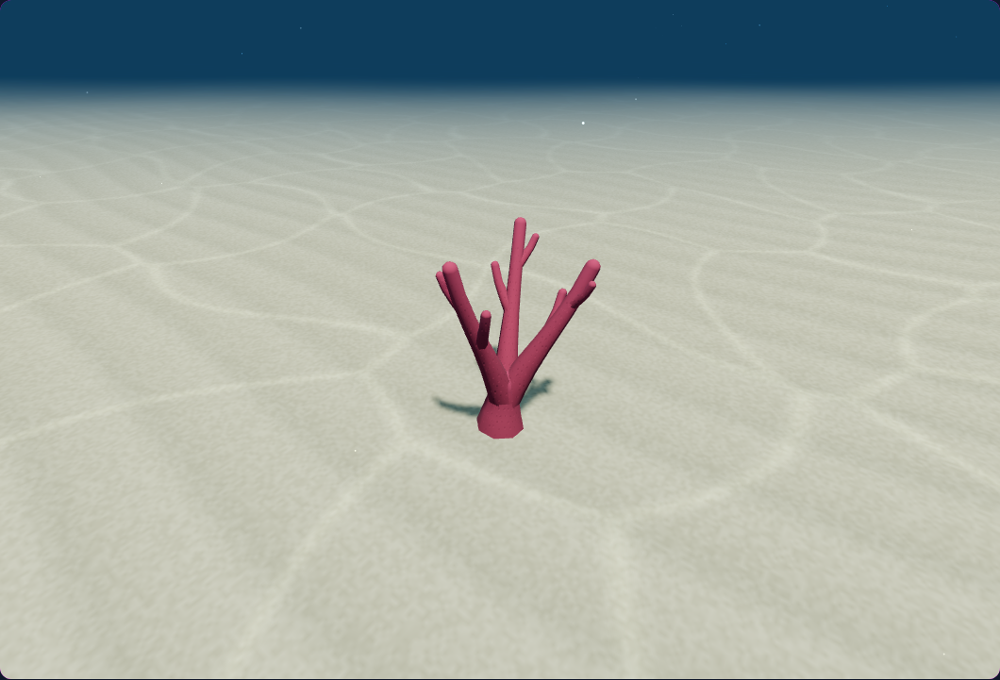
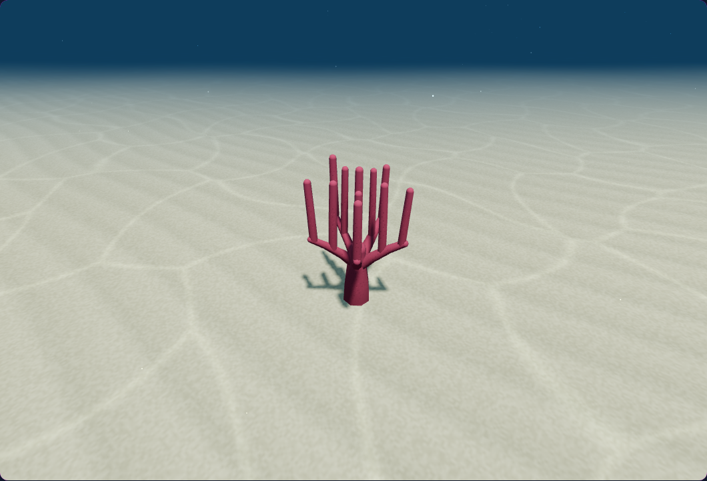
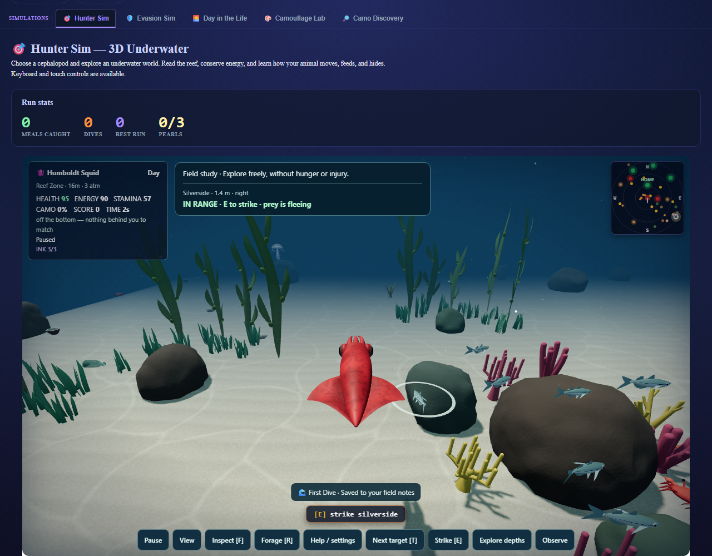
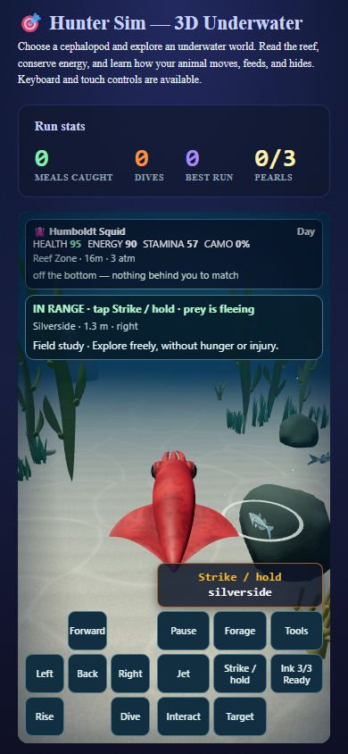

More organic coral branches
Uneven shoulders, shallow fluting, and shading that follows the actual branch surfaces. Rounded tips and basal anchors are retained.
39 CPU and 12 browser checks passed. Report and practical limits
Before/current diagnostic views use matching model transforms and cameras. Other meshes are masked for model inspection.
finger
Before
Current: 675 existing vertices antler

Before
Current: 711 existing verticescorymbose

BeforeCurrent: 972 existing verticesIn the simulator

squid-approach-desktop: ordinary controls and natural actors.
squid-approach-phone: ordinary controls and natural actors.Original mesh counts, topology, tissue colors, and pore coordinates retained. No FPS or audio claim.
Source f65b507f0110ab173584c65708a7f5455d8ace814b3fc9e236694aed447dc690